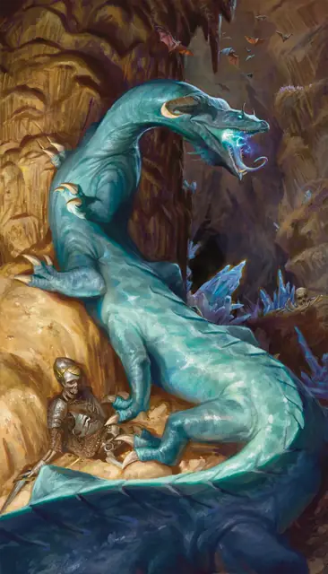

Бехир
Behir
Огромное Чудовище, Нейтральное Злое

Класс Защиты 17 Инициатива +3 (13)
Хиты 168 (16к12 + 64)
Скорость 50 футов, Лазания 50 футов
| мод | спас | ||
|---|---|---|---|
| СИЛ | 23 | +6 | +6 |
| ЛОВ | 16 | +3 | +3 |
| ТЕЛ | 18 | +4 | +4 |
| мод | спас | ||
|---|---|---|---|
| ИНТ | 7 | −2 | −2 |
| МДР | 14 | +2 | +2 |
| ХАР | 12 | +1 | +1 |
Иммунитеты Электричество
Чувства Тёмное зрение 90 футов, пассивное Восприятие 16
Языки Драконий
Опасность 11 (7 200 опыта; БВ +4)
Действия
Мультиатака. Бехир совершает одну атаку Укусом и использует Сдавливание.
Укус. Бросок рукопашной атаки: +10, досягаемость 10 фт. Попадание: 19 (2к12 + 6) Колющего урона плюс 11 (2к10) урона Электричеством.
Сдавливание. Спасбросок Силы: Сл 18, одно существо Большого размера или меньше, которое бехир видит в пределах 5 футов. Провал: 28 (5к8 + 6) Дробящего урона. Цель Схвачена (Сл высвобождения 16), и пока длится захват, она Опутана.
Электрическое дыхание (Перезарядка 5–6). Спасбросок Ловкости: Сл 16, каждое существо в Линии длиной 90 футов и шириной 5 футов. Провал: 66 (12к10) урона Электричеством. Успех: Только половина урона.
Бонусные действия
Проглатывание. Спасбросок Ловкости: Сл 18, одно существо Большого размера или меньше, Схваченное бехиром (бехир может держать проглоченным только одно существо одновременно). Провал: Цель становится проглоченной бехиром, а состояние Схваченный оканчивается. Проглоченное существо Ослеплено и Опутано, а также имеет Полное укрытие от атак и прочих эффектов, исходящих снаружи бехира; кроме того, оно получает 21 (6к6) урона Кислотой в начале каждого хода бехира.
Если бехир получает за один ход не менее 30 урона от проглоченного существа, в конце этого хода он должен совершить спасбросок Телосложения Сл 14; при провале он отрыгнёт проглоченное существо, которое падает Опрокинутым в пространстве в пределах 10 футов от бехира. Если бехир умирает, проглоченное существо теряет состояние Опутанный и может освободиться из трупа, потратив 15 футов перемещения и оказываясь на выходе Опрокинутым.
Бонус мастерства +4
Среда обитания Подземье
Сокровища Любые
Бехир
Извергающий молнии обжора
Бехиры — рептилии с шестью парами лап, которые неустанно охотятся, чтобы обеспечить себя пищей. Их короткие конечности позволяют стремительно перемещаться по полу и стенам.
Если же бехиры не могут настичь свою добычу, они пытаются остановить её мощным дыханием молнии.
Легенды гласят, что первые бехиры были созданы с помощью магии штормовыми великанами во время их древней мультивселенской войны с драконами. При помощи своей способности повелевать погодой они смогли изменить суть синих драконов. В результате появились первые бехиры — охотники, питающие особую страсть к драконьим яйцам.
Бехиры обитают в разветвлённых пещерных системах и многоуровневых развалинах, где они могут в полной мере использовать свою необычайную подвижность, но стараются держаться подальше от мест, где живут драконы. Те считают бехиров опасными уродцами и нападают на них, как только заметят. Несмотря на это, иногда эти монстры решаются проникнуть в драконьи логова, надеясь отыскать и полакомиться невылупившимися драконьими яйцами.